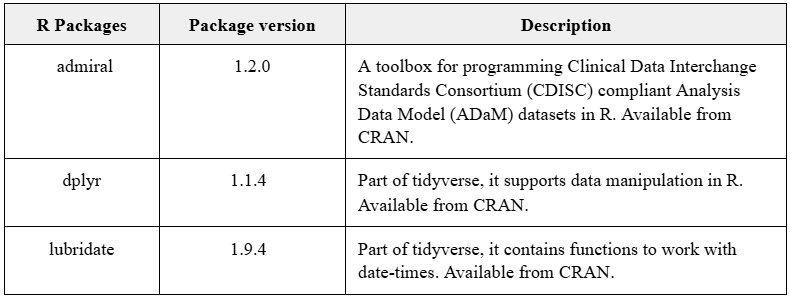

library(metacore)
library(xportr)
library(pharmaverseadam)
library(dplyr)
# Read in metacore object
metacore <- spec_to_metacore(
path = "./metadata/safety_specs.xlsx",
# All datasets are described in the same sheet
where_sep_sheet = FALSE
) %>%
select_dataset("ADSL")
dir <- tempdir() # Specify the directory for saving the XPT file
adsl <- pharmaverseadam::adsl %>%
# Coerce variable type to match specification
xportr_type(metacore) %>%
# Assigns variable label from metacore specifications
xportr_label(metacore) %>%
# Assigns dataset label from metacore specifications
xportr_df_label(metacore) %>%
# Assigns SAS length from a variable level metadata
xportr_length(metacore) %>%
# Assigns variable format from metacore specifications
xportr_format(metadata = metacore) %>%
# Write xpt v5 transport file
xportr_write(file.path(dir, "adsl.xpt"), metadata = metacore, domain = "ADSL")eSubmission
Introduction
This article shares learnings from R and open source based submission experiences, and how these can be achieved using pharmaverse packages in conjunction.
When considering such a submission, it is important to discuss this early on with the regulatory agency during any pre-submission correspondence.
The main pharmaverse packages specifically supporting eSubmission are as follows:
{xportr}: delivers the SAS transport file (XPT) and eSub checks.{pkglite}: enables exchange of closed source R packages via text files.{datasetjson}: experimental package to deliver Dataset-JSON.
Note that a python equivalent of {pkglite} also exists, read more at pharmaverse python.
Of course, most of the pharmaverse packages contribute to eSubmission in some way, through their focus on enabling clinical reporting and analyses deliverables that form the backbone of any submission. There are many other examples on this site dedicated to these, so we won’t repeat here. One package we did want to call out here is {aNCA} which performs Non-Compartmental Analysis, as clinical pharmacology analyses are another important part of submissions.
R Submissions Working Group
Within the R Consortium, the R Submissions WG have conducted several pilots to provide open examples of submitting R-based clinical trial data/analysis packages to the FDA.
Anyone new to R-based submissions should definitely check out the open materials from this team here.
Since these pilots laid the foundation, several major pharma companies have submitted primarily using R to health authorities across the world, so this article includes a mix of learnings from the pilots and real submissions.
Submission Contents
The areas of eSubmission that pharmaverse packages are most useful for would be data, readable code, and documentation.
Each of the sections below talk in more detail of these areas, plus specific mention of validation which is a common topic raised around usage of open source.
Data
The main 2 forms of dataset for CDISC clinical trial submission are SDTM and ADaM. Refer to the separate example articles on this site for how best to go about producing these.
For eSubmission the most common transport file format used to deliver these to health authorities is as xpt files, and for this we use {xportr}. This package works well with {metacore} harmonized specification objects as shown in the ADaM articles on this site.
Here is an example call using a synthetic ADSL ADaM from {pharmaverseadam} that shows how to produce xpt files, as well as how certain {xportr} functions can be used to take attributes directly from specifications so as to ensure specification to dataset consistency. This helps to ensure eSubmission-readiness. Additionally the package includes a number of built-in CDISC conformance checks as detailed on the site.
[1] "Subject-Level Analysis Dataset"Now here’s an example where the checks would help to identify future possible eSubmission challenges. Note the console messages explaining the issues.
adsl_challenges <- pharmaverseadam::adsl %>%
# Make a numeric variable as character, which conflicts with specifications
mutate(AGE = as.character(AGE)) %>%
# Add a variable that is name >8 characters which is not allowed for xpt v5
mutate(REGIONCAT = REGION1)
adsl_challenges <- adsl_challenges %>%
# Coerce variable type to match specification
# This time we use the verbose argument to add a warning to the console
xportr_type(metacore, verbose = "warn") %>%
# Write xpt v5 transport file
xportr_write(file.path(dir, "adsl.xpt"), metadata = metacore, domain = "ADSL")── Variable type mismatches found. ──✔ 1 variable coercedWarning: Variable type(s) in dataframe don't match metadata: `AGE`
- `AGE` was coerced to <numeric>. (type in data: character, type in metadata: integer)
i Types in metadata considered as character (xportr.character_metadata_types option): 'character', 'char', 'text', 'date', 'posixct', 'posixt', 'datetime', 'time', 'partialdate', 'partialtime', 'partialdatetime', 'incompletedatetime', 'durationdatetime', and 'intervaldatetime'
i Types in metadata considered as numeric (xportr.numeric_metadata_types option): 'integer', 'numeric', 'num', and 'float'
i Types in data considered as character (xportr.character_types option): 'character'
i Types in data considered as numeric (xportr.numeric_types option): 'integer', 'float', 'numeric', 'posixct', 'posixt', 'time', 'date', and 'hms'Warning: The following validation checks failed:
• Variable `REGIONCAT` must be 8 characters or less.Furthermore, the package functions also include certain arguments that you can use to help shape to your specific submission needs.
The below shows how some specific FDA requirements can be achieved using the length_source argument from xportr::xportr_length() and the max_size_gb argument from xportr::xportr_write(), as detailed in the code comments. In this case, the dataset splits would be very unlikely to occur in practice for ADSL but would be much more likely on a BDS dataset such as ADLB for a large study.
adsl_example <- pharmaverseadam::adsl %>%
# Coerce variable type to match specification
xportr_type(metacore) %>%
# Assigns variable label from metacore specifications
xportr_label(metacore) %>%
# Assigns dataset label from metacore specifications
xportr_df_label(metacore) %>%
# Assigns length from the maximum length of any value of the variable as per FDA data minimization guidance
xportr_length(metadata = metacore, length_source = "data") %>%
# Assigns variable format from metacore specifications
xportr_format(metadata = metacore) %>%
# Write xpt v5 transport file but split into smaller subsets if greater than 5GB
# according to the FDA cutoff size
xportr_write(file.path(dir, "adsl.xpt"), metadata = metacore, domain = "ADSL", max_size_gb = 5)── Variable labels missing from metadata. ──✔ 13 labels skipped── Variable length is shorter than the length specified in the metadata. ──── Variable lengths missing from metadata. ──✔ 13 lengths resolved `RFSTDTC`, `RFENDTC`, `RFXSTDTC`, `RFXENDTC`, `RFICDTC`, `RFPENDTC`, `DMDTC`, `DMDY`, `LSTALVDT`, `LDDTHGR1`, `DTH30FL`, `DTHA30FL`, and `DTHB30FL`Data frame exported to 1 xpt files.As an alternative to xpt, we also have {datasetjson} which enables the emerging new submission data exchange standard Dataset-JSON detailed here. As this package is still experimental, we don’t include code examples here but over time and as momentum grows we can add extra examples to this article. See R Submissions WG pilot 5 for a pilot submission using Dataset-JSON.
Readable Code
When using internal company-specific closed source tools and codebases, we often face challenges around providing readable code to health authorities as internal single company solutions are by nature not easily accessible and understandable. This is one of the benefits of using open source codebases in the submission setting as it enables review teams to look deeper into the functions used, plus they have the same open solutions available to use themselves as part of their review. As more of the industry embraces open source, we may even see more harmonization of submission packages across the industry as the same packages are re-used, and this should lead to greater familiarity from review teams easing their critical submission dossier review.
The nature of R packages and functions, as well as influence from {tidyverse}, has encouraged most pharmaverse package development teams to embrace modular strategy to their code. So when you use packages like {admiral}, you’ll see that the ADaM templates have been built with readability in mind specifically to aid with eSubmission.
Documentation
When using R for submission there are some important recommendations around documentation you should include as part of the eSubmission package. Most companies include these in the Reviewer’s Guide documents (the PHUSE Advance Hub offers example templates for these), but you might also choose to use a programTOC document.
Here’s the information we recommend including:
- R version used
- Descriptions of the main open source R package used, the version of each that you used, and where these are available from (especially if anywhere other than CRAN)
- Descriptions of any closed source packages used (see details below)
- Basic installation instructions of the R version used and how to install the package versions that you used (e.g. from CRAN). The R installation instructions should cover installation from Windows.
Here is an example extract of what the documentation of the open source packages used might look like:

For closed source packages, if you plan to submit the code then there are 2 main options - {pkglite} to create txt files, or zip files (as were successfully used in later R Submission WG pilots).
Here is an example taken from the R Submission WG pilot 1 around how they used pkglite::pack() to provide packages as txt files. On the other side pkglite::unpack() could then be used to unpack.
You can also check the following example Reviewer’s Guides as used for these pilots:
For further Reviewer’s Guide guidance, regardless of the programming language used for regulatory submissions, refer to the completion guidelines found at this PHUSE ADRG Package WG. As we progress on this open source submission journey, it is worth monitoring this PHUSE Open-Source Metadata Documentation WG to see how the guidance continues to evolve in this space.
Validation
Last but not least, through the submission process you might be asked to provide evidence of why you consider the open source code used to be accurate and reliable.
This of course is a huge topic and one where you should first refer to guidance from the R Validation Hub.
Pharmaverse also offers a selection of recommended packages that can help with this via our Developers page under Package Validation. Under CI/CD it also offers thevalidatoR which is a GitHub action that can be used to produce standardized validation reports, such as this example from an earlier version of {admiral}.